| 今日の主なイベント |
| ソウルオリンピックスタジアム スタジアムツアー |
| ミュージカル NANTA鑑賞 |
| 野球観戦 トゥサンベアーズ×サムソンライオンズ |
| 朝 |
8:00
起床。
ネット接続に挑戦。
ちょっと苦労するも、なんとか繋がった。
釜山でのホテルを予約しようとするが、どこにするか迷う
韓国高速鉄道KTXの運行スケジュールを確認しておく。
大体1時間おきくらいか。
09:40
朝食。
フロントで隣の喫茶店のクーポンを貰うシステムだ。
今日はちょっと天気悪くて、曇っている。
アメリカン・コンチネンタル・日本食の中からアメリカンを選択。
素っ気ない朝食だ。
部屋に戻って、釜山のホテル予約、メールチェックなどをする。
| 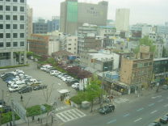 |  |
| 朝の景色 | アメリカン・ブレックファースト |
| ソウルオリンピックスタジアムへ |
11:30
外出する。
まずは明洞のCITI BANKへ。
日本語にも対応していて、さすがにトラブル無し。
300,000Wを下ろす。
街中のATMだと何故ダメなのだろうか。
| 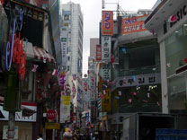 | 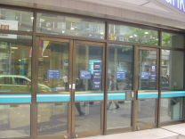 | 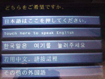 |
| 明洞 | CITI BANK | ATM画面 |
11:50
明洞駅で地下鉄定額券を購入。5000W
2号線で202→238へ。
6号線に乗り換えて、622→619へ。
今日はアーミーが何人かいて目立つ。
しつこいくらいにスタジアムへの乗り換え案内があるので、間違えようが無い。
| 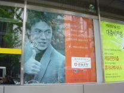 | 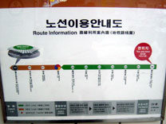 | 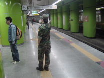 |
| ミョンボ | スタジアム案内 | アーミー |
| ソウルオリンピックスタジアム |
12:20
ワールドカップ競技場駅に到着。
駅の目の前でアクセスは抜群だ。
併設されているカルフールの入口が見える。
| 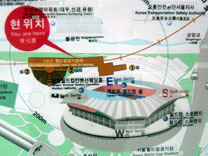 | 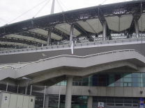 | 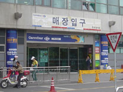 |
| 駅の案内板 | 目の前がスタジアム | カルフール入口 |
ぐるっと西へ回って、スタジアムツアーへ。
 |
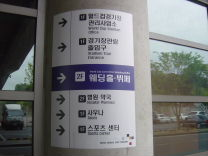 | 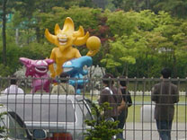 |
| 案内板 | スタジアムツアー入口 | 懐かしいマスコット |
入口前にワールドカップ関連の展示が沢山あった。韓国一色だけど(^_^;)
むき出しなので、結構落書きされていた。
| 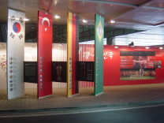 | 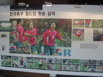 | 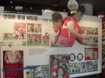 |
| 入口前 | パネル | ヘディング |
| 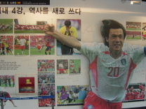 | 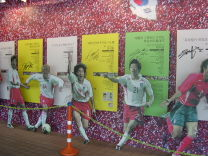 | 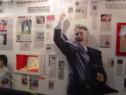 |
| ミョンボ | 韓国各選手 | お馴染みのガッツポーズ |
スタジアムツアー入口へ。入場料は200W。安っ！
入口で名前を記帳させられる。
| 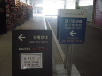 | 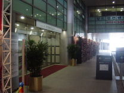 | 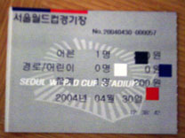 |
| 案内 | 入口 | チケット |
いきなりスタジアムのピッチへ。
TVでは何回か見ているが、実に見やすい素晴らしいスタジアムだ。
屋根の構造はサンドニに似ているかな。
とにかくアジアNo1であることは間違いない。
何故日本ではこういうスタジアムを造れないのか？
 |
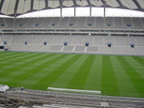 | 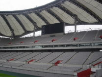 |
| ゴール裏 | バックスタンド | ゴール裏 |
 |
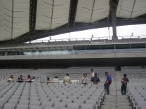 |
| ベンチ | ツアー客 |
他にこれといった展示は無し。
ユニホームくらいは買えると思ったのだが、何もないのでTシャツを購入。
| 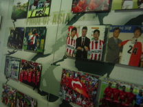 | 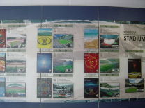 |
| パネル | 韓国のスタジアム |
 |
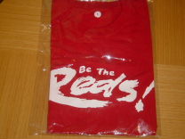 |
| コンビニ | Be The Reds! |
隣接するショッピングエリアへ。
食事でもしようと思ったのだが、フードコートは激混み。
しかも表示がハングルのみだったのでパス。
| 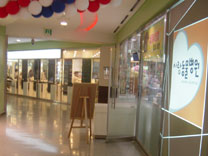 | 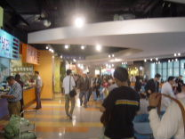 | 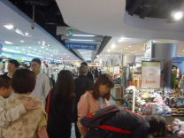 |
| 美容院 | フードコート | カルフール |
カルフールの店内を覗く。
ToT限定版CDはここにもない。
見たことのないゲーム機が並んでいた。
| 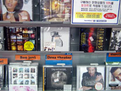 | 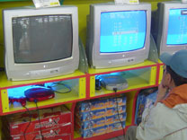 | 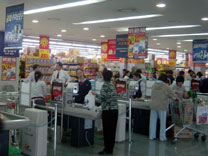 |
| ToT通常版 13800W | ゲーム機 | レジ |
| 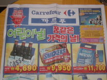 | 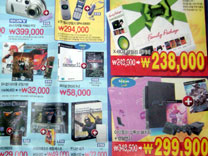 |
| チラシ | チラシ |
スタジアム東門が開いてたので、階段を上ってみる。
| 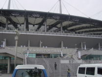 |  |
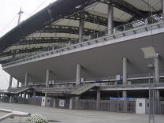 |
| 東門 | 入口 | スタジアム |
| 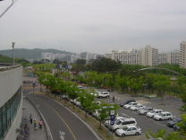 | 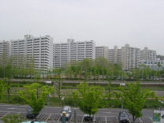 | 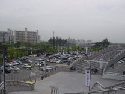 |
| スタジアム周辺 | スタジアム周辺 | スタジアム周辺 |
| ソウル駅へ |
13:20
地下鉄に乗車。ソウル駅に向かう。
6号線で619→622へ。
2号線で238→243へ。
| 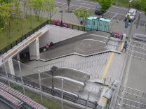 |  |
| ワールドカップ競技場駅入口 | ホームのTVモニター |
ソウルヨク駅に到着。
ソウル駅まで歩く。
| 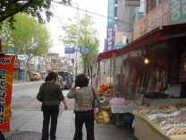 | 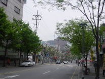 | 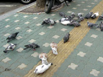 |
| ソウルヨク駅周辺 | ソウル駅へ | 鳩 |
| 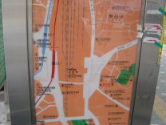 | 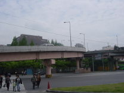 | 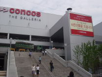 |
| ソウル駅周辺 | 立体道路 | ソウル駅裏 |
| 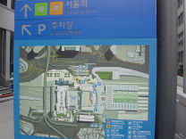 | 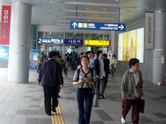 |
| ソウル駅案内 | ソウル駅へ |
ソウル駅に到着。
改築したばかりの真新しい駅だ。
| 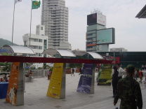 | ||
| ソウル駅前 | ソウル駅前 | ソウル駅 |
| ソウル駅 |
| 構内案内 | 切符窓口 | 運行掲示板 |
KTX乗り場は３F。まるで空港みたいな感じ。
切符自販機で明日のKTX切符購入にチャレンジ。
驚いたことに、残席はほとんど無い。
なんとか席を確保できたと思っても、最後の決済のところでエラーになってしまう。
| 時刻表 | KTX乗り場 | KTX切符窓口 |
 |
|
| 切符自販機 | 列車選択画面 |
仕方ないので窓口へ。
3Fの窓口では「No Seat、2Fに行って」と言われた。
こりゃ困ったことになってきたな。甘く見すぎた。
2FのAdvanced Tickets窓口に並ぶ。
しかし、なかなか順番が回ってこない。
やっぱり席は無いと言われる。
FirstClassでもいいやと思ったら、それもダメで、Standingのみと言われる。
さすがにStandingは困るな～。とりあえず止める。
こりゃ困ったぞ。
Standingで妥協するか、他の特急にするか、あるいは飛行機か・・
もう1回自販機にチャレンジしてみる。
数席空いているように表示されているけど、結局エラーになってしまう。
Visaじゃダメなのか？
というかStandingですらエラーになってしまうので、どうも自販機では無理っぽい。
セマウル号もほぼ満席だし。
もう一度窓口へ並ぶ。
また外れの列で、前の客がトラぶって揉めている。
15:20
やっと自由席を買えた。
自由席なのでちょっとだけ安く、43700W。
ちゃんと座れるのかどうかは不明。
| Advanced Tickets窓口 | 時刻表 | 切符 |
| NANTA鑑賞 |
予定時間を遥かにオーバーしてしまった。
慌ててナンタ劇場へ向かう。
1号線で133ソウル駅→132へ。
2号線201→243へ。
5号線531→532西大門駅へ。
走ってナンタ劇場へ向かう。
| 西大門駅の案内図 | 西大門駅周辺 |
| NANTA劇場へ曲がり道 | NANTA劇場 |
15:50
開演10分前になんとか到着。
当日券も買えそうだ。
窓口のお姉さんは日本語OKだった。
1F席を選び、JCBの5%割引で47500W。
 |
||
| 当日券窓口 | JCBの5%割引 | チケット |
客の入りは6割位かな？
思ったより小振りな劇場だ。
席は1Fほぼ真中の良席だ。
さすがにこの時期だと日本人が多いが、白人も結構いる。
16:00
スクリーンに字幕が映し出される。ハングル・英・日・中の4カ国対応。
色々と客に指示が出され、「隣の人と挨拶して」とか少しずつ盛り上げていく。
冬のソナタ、BOAの写真も使われていた。
スクリーンが上がって、いよいよ開始。
もっと叩きまくりの内容なのかと思っていたが、そうではなかった。
客を壇上に上げての餃子作り競争、客との掛け合い、ボールを客席にばらまいたりと飽きさせない。
特にhead chef役のGonHoKimがネプチューンの原田泰造に顔も動きもそっくりで面白かった。
もちろん、台所での包丁使いや最後の太鼓のシーンは圧巻だ。
マイキーならどういうふうに叩くのだろうか。
17:40
公演終了。短めのミュージカルだけど、盛り上がって満足。
パンフを購入。5000W
購入者は直接サインをしてもらえるようだが、時間がないのでパス。
| パンフ | head chef |
| 明洞観光 |
シチョン駅に向かう。
| イベント | 西小門路 |
地下鉄に乗る。201→202乙支路入口駅へ。
明洞は昨日より混んでるな～。
昨日頼んだ眼鏡を受け取る。
| 混雑 | 眼鏡 |
お土産にペ・ヨンジュングッズを購入しておく。
タペストリー20,000W、マグカップ20,000W、マウスパット6,000W、手鏡5,000W
これだけ買っておけば、十分過ぎるだろう。
 |
||
| クッション | うちわ | タペストリー |
| タペストリー | マグカップ | マウスパット、手鏡 |
ホテルに戻って荷物を整理。
| チャムシル総合運動場野球場へ |
18:29
ホテル発。
18:30試合開始なので、予定より遅れてしまったが、途中から見れるだろう。
屋台で饅頭っぽいものを購入。500W
なかなか旨かった。
地下鉄4号線で423→422へ。
スポーツToday紙を購入。
今日の試合日程を確認しておきたかったが、よく分からず。
2号線で205→218へ。
ちょうど車内は通勤ラッシュだ。
| 饅頭 | スポーツToday紙 | 五輪代表 |
| コラム | 誰？ |
| 野球観戦 トゥサンベアーズ×サムソンライオンズ |
19:13
総合運動場駅に到着。
5番出口を出ると、目の前がチャムシル総合運動場野球場だ。
ソウルのアクセスの良さは素晴らしい。
スタジアム前には売り子のオバちゃんがいっぱいいて、声をかけてくる。
| 総合運動場駅 | 目の前にスタジアム | 売り子 |
自由席のチケットを購入。6000W
自由席入口までぐるっと回る。場内から歓声が聞こえてくる。
| 窓口 | チケット | 球場周り |
ライト外野席に入場。
とりあえず席は空いていそうだ。
白の学ラン風の応援団長が派手な応援をしている。
| ライトから | 団長 | 3回裏攻撃中 |
一旦売店に戻って買い出し。
韓国海苔巻き 4000W
OBビール 2000W
応援風船バット（2本セット） 2000W
応援スペース近くの座席を確保。
韓国海苔巻きは少しずつ切れ目が入っていて、食べやすい。
| ビール＆海苔巻き | 風船バット |
チアガールが2人出てきた。
団長の指示に従って、風船をリズムよくバンバン叩いて応援する。
相手側の攻撃の時は応援はお休み。
その時はレフト側が応援している。向こうはチアガールが4人いるな～
| 団長 | チアガール | チアガール |
| スクリーン | レフト側 |
4回裏の攻撃。
ライト方面にいい当たり！
こっちの席のほうにちょうどボールが向かっている。
野球のボールってこんなに滞空時間長かったっけ？
座席の左斜め前にボールが飛び込み、ソロホームランだ！
これで4-1に。
実はてっきり勝っていると思って見ていたのだが、実は負けている側だった。
| ソロホームラン！ | 喜ぶファン | 4-1 |
風船を叩く応援も結構疲れる。
5回裏が終わった所でグランド整備に。
皆で体操をしたりする。
客の入りはあまり良くない。
全体では3割くらいか？
| ライト | 体操中 | 気合入っている団長 |
6回表の守備。
ノーアウト1・2塁のピンチ。
1アウト2・3塁になったあと、まさかのパスボールで失点。
犠牲フライでもう1点追加。6-1に。
たまらずピッチャー交代。
「We Will Rock You」が場内にかかる。
さらにタイムリーを浴びてしまう。7-1。
こりゃ勝てそうもないな～。
6回裏の攻撃。
あっさり3者凡退。
団長も諦めたのか、応援に出て来なくなった。
ちらほら帰り始めた人もいる。
7回表の守備。
ショートがジャンピングキャッチのファインプレー。
これで流れを引き寄せられるか？
| ライト | 6回裏の攻撃 | 7-1 |
7回裏
チアガールがハートマークを持って登場。
団長も再登場し、熱が入る。
ノーアウト1・2塁のビッグチャンス。
しかし、後が続かずに2アウトに。
ここでピッチャー交代。
そしてライトにいい当たりが！
これは3ランか・・しかしフェンス直前で捕られてしまった。
万事休す。
| チアガール | チアガール | 団長 |
| 応援中 | チャンスを逃す | 演説中 |
21:16
勝てそうもないし、買い物に行かなくてはいけないので、途中で帰る。
| サッカーのオブジェ | スタジアム周辺マップ | 駅の案内板 |
| COMEX Mall |
地下鉄218→219サムソン駅へ。
一昨日も来たCOMEX Mallへ向かう。
| 車内の広告 | サムソン駅の案内板 |
フロアマップがあるけど、ハングルのみで分からん・・・
と思ったら日本語のフロアマップが置いてあった。
| COMEX Mall前 | フロアマップ | 日本語版もあった |
CDショップへ。
やっとToT限定版を発見。15300W
2枚組なのだが、旧式の厚いケースだ。
CD2の音源はLive Scenes from NYかららしい。
せっかくなので、もう1枚位なんか買おうと物色する。
宇多田ヒカルのベストなんてお土産にどうかと思ったが、これは安くない。
DVDは全体に安いけど、欲しいものが見当たらず。
結局Makisimを購入。15300W
 |
||
| CDショップ | DT | J-POPはオムニバスが人気 |
 |
||
| 座頭市 | ソナタ他 | G3 Liveなど |
 |
|
| CLASSIC | ウタダ他 |
| ToT来韓記念限定版 | makisim | 会員カード |
他の店を覗く。ソニーショップはもう閉まっていた。
| ソニーショップ | ポスター | 店内の様子 |
| 本屋 | ゲーセン |
映画館を覗く。
水族館は閉まっていた。
7-11でお茶のペットボトル購入。1300W
| 映画館 | 映画館窓口 |
| ジョーズ | 水族館 | Sanrio |
腹が減ったので、鍋料理の店に入る。
メニューに日本語が併記してあったが、日本語は話せないようだ。
おぼろ豆腐のチゲを注文。4800W
当たり前だが、辛い！
| 鍋料理 | 店内 | 豆腐のチゲ |
ATMはまたNG。
別の場所のATMは日本語OKで成功した。何が違うのか？
50万Wを下ろす。
| OKだったATM | JACKIE'S KITCHEN | ソニーのデジカメ看板 |
| ホテルへ |
地下鉄でホテルに戻る。
自販機で切符購入。
前に座っている白人はバッタモンのマンUシャツを着ているが、それでいいのか？
| 切符自販機 |
コンビニで買出し。この店舗は日本語表記もあった。
 |
||
| おにぎり | 購入品 |
ホテル着。
| NHKのQueen特集 |
そのまま寝る。Zzzz